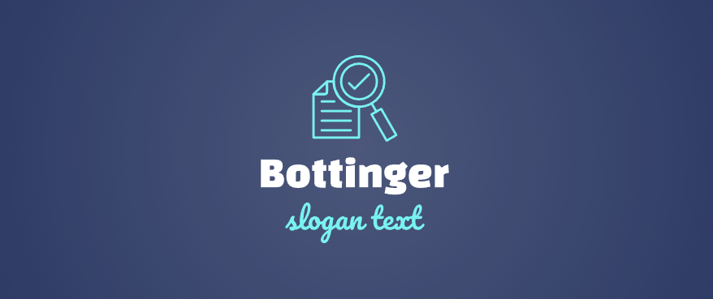

Audit smarter.
Rank higher.
Grow faster.
Bottinger's SEO audit engine surfaces every issue holding your site back — from broken links and crawl errors to missed keyword opportunities and technical debt.
bottinger.com
Audit completed · 214 checks
14 issues found · 3 critical
Every dimension of SEO, covered
From page-level signals to site-wide architecture, Bottinger gives you a complete picture — not just the easy stuff.
Technical SEO
Crawl errors, redirect chains, canonical issues, HTTPS status, page speed, and Core Web Vitals — all in one pass.
Keyword Analysis
Identify gaps between what you target and what you rank for. Surface quick-win opportunities and competitive blind spots.
Backlink Audit
Evaluate your link profile for toxic domains, lost links, and high-value opportunities from competitors in your niche.
On-Page Content
Title tags, meta descriptions, heading structure, duplicate content, thin pages — every element scored and explained.
Schema & Structured Data
Detect missing or malformed JSON-LD, validate rich result eligibility, and flag schema conflicts across your pages.
Performance Monitoring
Track ranking changes and site health over time. Get alerted the moment something breaks — before Google notices it.
From URL to action in under 30 seconds
No setup. No tracking code. Just your domain and a button.
Enter your domain
Paste any URL and Bottinger begins crawling immediately — no account required for a basic audit.
We run 200+ checks
Our engine tests every ranking factor — technical, on-page, off-page, and UX signals — in parallel.
Get a prioritised report
Issues are ranked by SEO impact. Fix the top three and you'll see measurable results within weeks.

Your site deserves a better rank.
Run your first audit free — no credit card, no sign-up, no noise. Just answers.
Start Your Free Audit